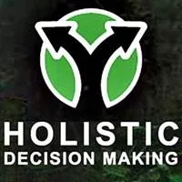
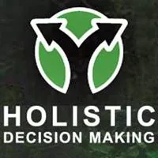
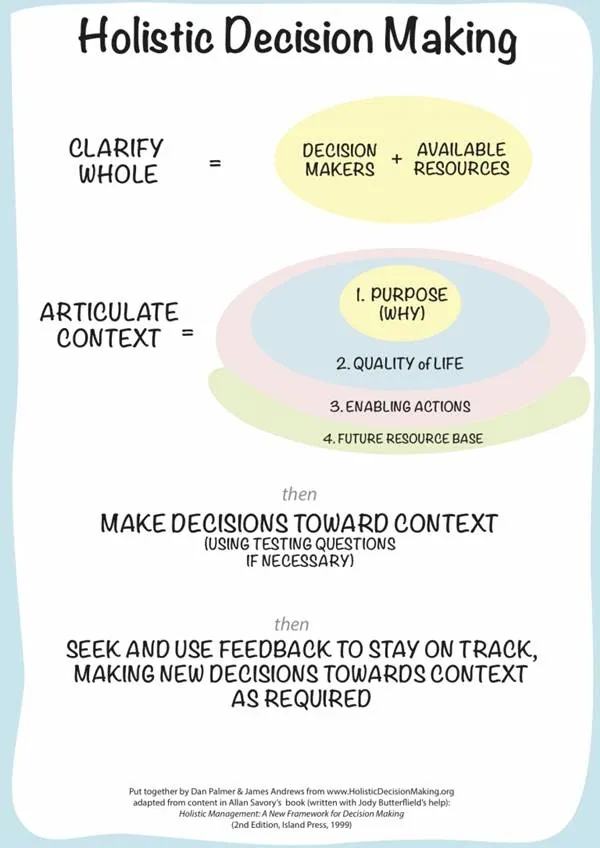

- …
- …
- Holistic Decision Making - Making decisions as if you, the Earth, everyone else, and the future... all mattered.
 - # Holistic Decision Making
- # Holistic Decision Making

- Dan Palmerintroducing- Holistic Decision Making
- Introduction to Holistic Decision Making - Holistic Decision Makingis a framework for empowering decision making that is socially, environmentally,- andeconomically sound in the short, medium- andlong term.- Humans are notorious for making decisions based on a short-term social, environmental, - oreconomic outcome that has unintended short, medium, and long term consequences in the other two areas.- An all-too-common example is a business that makes decisions towards financial outcomes, or a non-profit that makes decisions towards environmental outcomes, where both do so in a way that burn out the individuals involved (an unintended social consequence). Sooner or later, it is game over, and people give up, exhausted and demoralised. - If we were all making socially, environmentally and economically good decisions that were sound in the short, medium and long term, (even if say 25% of the time!) the world would be going in a radically different and more beautiful direction than it is right now. - Imagine a world filled with groups or organisations that simultaneously strengthened individual and social health and happiness, ecosystem health and diversity, and the local economy, both now and long into the future. - This is a world most of us want to live in, and it is precisely what - Holistic Decision Makingempowers. It is nothing if not ambitious, though as we will see, it is also nothing if not practical, and not that difficult, if you can give it just a little time and discipline.

-
- Clarify The Whole - Step One in Holistic Decision Making is to create clarity about what the Whole you wish to make a decision about actually is. Distinguishing this Whole from the rest of the universe. - The Whole might be an individual life, a couple, a family, a project, a company, a festival, an organisation, and so on. - Clarifying the Whole requires that you specify the following 3 aspects of any Whole: - DECISION MAKERS - Who are the stakeholders?
- PHYSICAL RESOURCES - What is the current reality?
- SOURCES OF MONEY - What cash flow keeps the Whole running?
- Here is a - 5 minute PodCastfrom the late- Bruce Wardgiving examples.- 1. DECISION MAKERS Decision makers are anyone who has veto power over decisions pertaining to the Whole that is being decided about. If the whole is your life, then you are the decision maker. In it is a family, the decision makers are the caregivers and any children old enough to have input on decisions (a three-year-old daughter is right on the threshold).- 2. AVAILABLE PHYSICAL RESOURCES This is anything you have access to that does or could help you in achieving whatever you set out to achieve. Resources include relevant qualifications and skill sets, plus all physical resources, such as vehicles, warehouse space, land, tools, machines you know you can borrow, anything you can potentially draw on or leverage toward getting things done.- 3. SOURCES OF MONEY - This can be cash on hand or in the bank, access to credit, and so on. It is not to imply you will ever necessarily use these lines of credit, but simply to acknowledge that they are there as possibilities. - This step can be extremely empowering because we so often never take the time to audit or appreciate just how many resources we have available to us.
-
- Articulate The Context - This is where the real work begins. What Savory in the past called the Holistic Goal (or HolisticGoal) and nowadays calls the Holistic Context (I’m just calling it the - Contexthere) is the heart of managing holistically. A context in this very special sense has four aspects. Let us tackle each in turn. Note that in the below quotations, which are all from the second edition of Savory’s Holistic Management, I have substituted holistic goal with holistic context to reflect his current usage.- 1. STATED PURPOSE - For any whole that was formed for a specific purpose, a statement of purpose is the starting point of your holistic context. Your statement of purpose should succinctly capture what the whole was formed to do and thus why it exists. - Here is VEG’s stated purpose or our why: - VEG exists to help grow healthy and abundant communities, landscapes, and livelihoods by designing and creating regenerative, human-supporting ecosystems - Make your stated purpose as simple and short as it can be to capture the essence of why your whole exists, but no simpler or shorter (to paraphrase a famous scientist). A statement of purpose might be one, two, or perhaps at most three sentences long. Reading it should resonate with you and remind you why you bother getting out of bed to participate in this whole. Keep in mind also that though you might later choose to share your statement of purpose with the world (as I have just done for VEG), at this stage it is for the decision makers, not anyone else. In VEG’s case we are aware, ironically, that as things stand we can better deliver on our statement of purpose by not actively sharing it with the general public, but by instead using much simpler messages (that of course remain true to it). - One reflection of my experience of working with others to articulate a statement of purpose is that it has proved much more effective to have the various decision makers independently pen one and only then to share them and work together to combine them into a single statement. Much faster, and much more inclusive of everyone’s perspectives and desires than trying to form one from scratch together. - Finally, note that some wholes don’t require a statement of purpose – wholes such as an individual person, a couple, or a family, which where not formed to do anything in particular, but to do all sorts of wonderful things. That said, myself and many people I know have personal statements of purpose that they find really helpful, so by all means don’t hold back if you or your family feel the urge. - 2. QUALITY OF LIFE STATEMENTS - Quality of life statements are the things the decision makers want to be true of the whole they manage. In Allan Savory’s words, “The quality of life portion of your holistic context expresses the reasons you’re doing what you’re doing, what you are about, and what you want to become. It is a reflection of what motivates you. It should excite you. It speaks of needs you want to satisfy now, but also of the mission you seek to accomplish in the long run. It is your collective sense of what is important and why” ( - Holistic Management, p. 71). Furthermore, “humans will always bias any decisions they make—even in rigorously controlled experiments—in favour of what they really want.- So what you really want must be in your holistic context” (p. 272). Here are a few areas Allan suggests considering in your quality of life statements:- Relationships
- Challenge and growth
- Purpose and contribution
- Economic-wellbeing
- And here - Bruce Wardintroduces quality of life statements:- Here are VEG’s quality of life statements: - We are professional, organised and unrushed
- We have a business culture based on mutual respect, open communication and complementary diversity
- We create meaningful & fulfilling livelihoods
- We are making a reasonable income and VEG has a healthy cash flow
- We offer genuine value to our customers
- We are continually learning and contributing learnings to a greater understanding of permaculture
- We conduct our business ethically with integrity and genuineness We are resilient and consciously adapting to a lower energy future
- We have spent a lot of time reflecting on and evolving these, and though we know they will keep evolving, we feel that if they are continue to be increasingly true of the way VEG manifests its statement of purpose in the world, our quality of life as individuals will continue to be enhanced by our involvement. - Here’s a lovely mock quality of life statement for by a middle-aged couple Allan Savory uses as an example in his book, where their life together is the whole under management: - “To be engaged in meaningful work for the rest of our lives and to be excited and enthusiastic about what we have to do and get to do each day. To be secure financially, physically, and emotionally into old age; to be known for our honor, integrity, chivalry, and spirit. To maintain robust health and physical stamina; to enjoy an abundance of mutually satisfying relationships. To explore and experience wild places and to ensure those places will still be there when our grandchildren’s grandchildren seek to find them. To live simply and consume sparingly” ( - Holistic Management, p. 83)- A few points of difference I’ll mention here are firstly that we find it worthwhile to word your quality of life statements in present tense. Not - to be, or- we hope,or- we want,or- we aimbut- we aresuch and such. Not “- I want to behealthy and vibrant” but “- I amhealthy and vibrant.” Write them as if they are happening now, and you’ll find them all the more powerful in taking you where you want to go. Closely related to this is making your quality of life statements as- activeas possible. Recently I suggested someone consider rephrasing something like “- I maintain relationships with my clients that are respectful and have integrity” to “- I relate to my clients with respect and integrity.” Avoid nouns (“relationship”) when you can instead use the verbs (“relate”) they summarise – which are almost always more grounded, direct and to-the-point.- Second, while the literature on Holistic Management I’ve seen tends to amalgamate such statements or values into a single quality of life Get it Down, then Get it Good- statement, with VEG and elsewhere we have evolved towards multiple distinct (yet inevitably overlapping in meaning) quality of life- statements. I might be missing something here, but as far as I know it doesn’t matter which way you play it, and you’ll see later why I’ve personally found this so worthwhile (in creating a holistic context diagram).- One of the things people find hardest about articulating quality of life statements is getting - somethingdown to then start morphing toward coherence and completeness. In our culture we tend to cogitate over the perfect sentence before we reach for our pen. But as Savory says, “In recording everyone’s thoughts initially, it is important that you capture them in simple phrases, rather than well-worded sentences. You will have plenty of time to edit the results into a unified statement” (- Holistic Management, p. 74). Just get words and phrases flowing,- get them outand- get them down. There will be plenty of time to g- et them goodlater.- Savory also observes that “creating a quality of life statement requires a good deal of reflection and numerous conversations, and it may be several months—a year or more in large organisations—before it begins to express what you want it to express. In the interest of moving on, however, start with a very rough statement that indicates the general direction in which you want to head. Then you can form the remaining two parts of your holistic context and begin making decisions that lead you toward it” ( - Holistic Management, p. 74)- In terms of addressing this issue, let me share a really simple technique I’ve found useful in helping groups make a start on their quality of life statements. Sometimes before the session I use some prompting questions like this to get the juices flowing. - What do you want to be true of your involvement with ____? What do you want from it, and what do you want to offer it?
- Describe ____in 10 years from now. What’s going on and what does it look and feel like?
- What, if anything, do you feel could hold ____back from reaching its full potential?
- When we get together these are shared, and we then get out a whiteboard and I have folk start calling out words or phrases that capture aspects of what they want to be true of the whole under management. We just get these flowing until we start running out of whiteboard, and we then together start to tease out some themes and categories in what is now on the board. - Then, often in a subsequent session, we transfer the contents of the first whiteboard to a second whiteboard, - grouping, editing, and refiningas we go. No matter what the starting point, we always end up with something at least a little more patterned and organised than what we started with. When we are done we go back and ensure that not a single word or phrase that captures something essential for any decision maker has not made it across to the second whiteboard. When we are done, we erase the first whiteboard.- Next, as we repeat this transfer back to the original whiteboard (ideally with one session per transfer), the decision makers start threading the phrases and words in the main categories that have emerged into draft quality of life statements, usually starting with “we.” In this way, little by little, and without any particular difficulty at any point, we end up with a first draft set of quality of life statements that is coherent and that includes all the original ideas, and that have evolved in the context of rich discussion. Enjoy this process and keep in mind that, as Bruce Ward points out in the below clip, that the discussion amongst decision makers in forming the holistic context is as important as the actual words in it: - Okay, let us move on to the next step – - enabling actions(or what Savory calls- Forms of Production).- 3. ENABLING ACTIONS (FORMS OF PRODUCTION) - Just a few more steps, and then it will all start coming together, you’ll see. Just hang in there, it is so worth it. - Forms of Productionare defined by Savory as- what you need to producein order to create the quality of life that has been described. In focusing on what rather than how, Savory explains “you only want to list- whathas to be produced, not- howit will be produced.- Howsomething is to be produced is a decision that needs testing” (Holistic Management, p. 77).- So, continuing with his example from above, he gives as forms of production for the middle-aged couple (pp. 83-84): - Profit from meaningful work.
- Work or leisure time in wild places.
- Time for learning, meaningful discussion, companionship, and exercise.
- A warm and hospitable home environment—wherever home happens to be at any time—in which friends, family, and colleagues always feel welcome
- Interestingly, in my experience I have repeatedly found it more intuitive and useful to think of the forms of production in terms of - how you need to behaveor even- what you need to be doingin order to enable the quality of life that has been described rather than- what you have to produce. Hence my substituting- enabling actionsfor- forms of production.I understand Savory’s caution here, but while I have found it possible to easily reword all forms of production stated as things needing to be produced (e.g., to say something like- we regularly enjoy work and leisure time in wild placesas opposed to- We producew- ork or leisure time in wild places, which to me is awkward and less direct), I often find there are crucial things that have to be happen in order to make a quality of life statement true that are either difficult or seemingly impossible to word in terms of what has to be produced. You will see several examples in VEG’s forms of production, some of which are shared below.- Accordingly, I have been using and recommending statements similar in structure to the quality of life statements (present tense, active voice) for the enabling actions, and have found that so long as you are aware of the issue, you can safely avoid including details that are things you will use your context to make decisions about (and which might or might not be a good idea at any particular time in the future), rather than things you include in your context (which as far as you can tell you always want to be true, now and at all times in the future, even though the particular wordings will evolve as you go along). - Offering me a wonderful illustration of this difference, recently I had a workshop participant read out some draft enabling actions for his own life as a whole under management. They included statements like “I drink one coffee per day” or “I watch TV versus read and draw at a ratio of no more than 1 to 2.” I passed on Savory’s advice: “ - Don’tquantify the forms of production in any way. How much of anything you have to produce is a decision that should be tested. Nothing requiring testing should be in the holistic goal” (- Holistic Management, p. 90).- Moving on, though a single enabling action can in principle serve multiple quality of life statements, in practice we have found that they usually attach themselves to just one. As an example, here are the enabling actions underlying VEG’s quality of life statement - we are professional, organised and unrushed:- We present well
- We are well prepared for each job
- We ensure our customers have clear expectations
- We ensure individual roles and responsibilities within VEG are clearly defined and all required tasks fall within a role
- We don’t take too much on
- We have clear agreements when collaborating with outside parties
- We maintain and use clear, easy-to-use time, material and people management systems
- The idea here is that - ifeach of these things is happening,- then, as far as we can tell, we will be- professional, organised and unrushed.- I don’t know about you, but for me, the articulation of what you actually - have to be doing(or producing in Savory’s framing) to realise the quality of life you want is a point when the transformative power of this framework starts coming into its own. The above components of the context (purpose and quality of life) have the ring of pithy aspirational statements that many of us have dabbled in somewhere along the line. But now we are directly specifying what- mustbe true of your day-to-day reality in order to deliver on your statement of purpose in a way that achieves all of your desired quality of life outcomes. We are- directly translating pithy aspirational sentiments into the fabric of everyday life. The rubber, my friends, is hitting the road! A recent workshop participant, Chris, sent through this quote from Thoreau after a discussion about this point, and I think it is perfect: “If you have built castles in the air, your work need not be lost; that is where they should be. Now put the foundations under them.” Forms of production are foundations (as is the future resource base we’ll move onto next).- I’ll share more of VEG’s enabling actions shortly, but let me first share one example from my family’s context just so you can see how the same principle applies. One of my family’s quality of life statements is - We are physically and emotionally healthy and strong- what do we have to be doing to make this true(or at least to maximise the chances of it being true, notwithstanding the inevitable curveballs of life)? Our enabling actions are:- We breathe clean air
- We drink pure living water
- We eat nutrient dense food
- We sleep well
- We live and work in toxin-free buildings which are light, warm and dry
- We lead active lives
- We are connected with health practitioners who help when necessary
- Again, the idea is that if all these enabling actions are true, the chances are that the quality of life statement they support is true. - I have noticed that the examples I’ve seen in the holistic management literature don’t tend to go to this level of specifying different enabling actions for each quality of life statement. In Savory’s example of forms of production (see above), the forms of production are listed separately from the quality of life statements, without any direct connection between particular forms of production and particular quality of life statements. - So once again keep in mind that the way I am presenting holistic management is, as informed by my experience of applying it, a bit different to what the books say. I trust anyone using this article as a guide will in turn find their own direct experience informing the nuances of applying the framework in a way that best suits them. Indeed, in - Holistic ManagementSavory encourages such experimentation and evolution: “The simple but successful framework for management and decision making outlined in this book will surely be improved and extended by thousands of people. As long as it remains simple enough for ordinary people to use, the power of the ideas behind it will encounter few limits” (p. 560).- Anyways, more on the power of holistic management later. For now, let us now move on to the final thread in the fabric of a holistic context – the future resource base. 4. Future Resource Base- “In describing your future resource base you need to consider how it must be many years from now if it is to sustain what you have to produce to create the quality of life you want” (Allan Savory, - Holistic Management, p. 78). For the middle-aged couple in his book we have been going through, Savory gives the future resource base as:- People. We are known to be compassionate and thoughtful, well-informed, good listeners, fun to be with, adventurous, and supportive.- Land. The land surrounding and supporting our town will be stable and productive. Wildlife will be plentiful—we’ll be able to see animals, or signs of them, anytime we venture out. The river will run clear and be full of life, and eagles will nest in the trees alongside it once again.- As integral to a context as the future resource base is, there are a couple aspects of the way Savory frames them that I have been finding useful to frame slightly differently in my own applications of Holistic Management. The first is including a description of the personal characteristics of the decision makers – “we are honest & compassionate,” or whatever the case may be. The idea is that you can’t have any direct control over the perceptions and attitudes of the people you depend on, so you instead specify what you can more directly influence – how you yourself behave. This in turn, the logic goes, will secure the support from others (outside your whole) that you depend on into the future. If we behave honestly and compassionately, others will think of us as honest and compassionately. - As true as this might be, however, I have evolved toward absorbing all these considerations into the quality of life and forms of production and making the future resource base a lot simpler and easier to assess as to whether it is getting better or worse. For instance (borrowing from Savory’s example above) the couple might have a quality of life statement that “we are known for our honour, integrity, chivalry, and spirit.” Then in the forms of production include statements like “we listen well in dealing with others,” “we support our friends readily,” and so on. They could list the things they would have to do in order to make it true that “we are known for our honour, integrity, chivalry, and spirit.” - Then, in the future resource base, as a sort of check that these forms of production are creating the desired quality of life, they would simply note things like “respect & support of our community,” as quite literally a resource that they depend on and wish to nurture (via their forms of production) into the future in order to achieve the quality of life (and, if appropriate, deliver on the statement of purpose) they have articulated. - The second aspect of framing the future resource base that I’ve been framing differently in practice is in the descriptions of the land and community etc as you envisage them being, “100, 500 or 1000 years from now ( - Holistic Management, p. 78).” So, in his example above, the land is described as it will hopefully be in the future, with eagles nesting alongside the clear, life-filled river and so on. I think it is important and empowering to make these kinds of statements, but in applying a context find it more intuitive to comprise the future resource base of aspects of your resource base you know need to improve and keep improving, in order that you eventually arrive at the reality described in such visionings. So I would be inclined to put down “river clarity and life,” “wildlife habitat,” “water cycle function” and and so on, as part of my future resource base, and something I can easily check in on as to whether they are improving or deteriorating over time.- I do think articulating these sorts of visions is a critical step in then populating your context, but I’m not sure about actually including them in your holistic context as future resource base descriptions. Rather, I have been finding it more intuitive to define the future resource base as simply what your forms of production depend on now and into the future. In other words, what are the resources (most likely included in your resource base back when you were defining the whole under management) you rely on in order to be able to do the things you need to do in order to make your quality of life statements true? Further, how do these resources have to be into the future if we are to maintain the quality of life we have articulated? - Here is what we currently have down for VEG’s future resource base: - Goodwill of customers
- Staff competence
- Organised warehouse
- Healthy working relationships amongst team members
- Our relationships with our suppliers
- Supply resilience
- Efficient, elegant and complete systems
- Strong, coherent, recognisable brand
- Functional, up to date, beautiful website
- Well maintained vehicles and tools
- Good relationships and reputation with partner organisations and colleagues
- We know that if any of these resources is - getting worseover time, we are in trouble, for part of the very foundation of our ongoing existence is being undermined. Our ability to keep existing, and to keep delivering on our statement of purpose by doing the things we have to do to ensure the quality of life we want, depends on these resources being maintained, and, ideally,- getting betterover time.- Whichever way you choose to articulate it, the future resource base part of the holistic context is integral. The other aspects of the holistic context are focused on the present and at best the short term future: what do we want to be true of our whole now, and what do we have to be doing now to make it so? The future resource base requires that we shift our attention from the now into the medium and long-term future, and the indicators that will let us know whether we are on track. - Now, if you have articulated your statement of purpose, quality of life statements, forms of production, and future resource base, you have yourself a draft or temporary holistic context. It has probably taken you a while to get to this point, and you are likely itching to put it to the ultimate test – as an aide in actually getting on and managing your whole. Okay then, if you can humour a quick video recap and then a look at how you can capture your holistic context in a diagram, we will get on to applying it, where your holistic context starts to really earn its keep. Quick Video Recap of the Above Communicating your Holistic Context Diagrammatically- The examples of holistic contexts available in the literature tend to be statements, lists, paragraphs or tables. We started out this way, but over time we found them frustrating, in that they implicitly prioritise what happens to be at the top, and also are harder to take in at a glance, and to see how the different components relate to each other. So we developed the following diagrammatic way of portraying a holistic context, with the statement of purpose in the middle, surrounded by the quality of life statements, in turn surrounded by the forms of production, then with the future resource base as a cup or cradle underneath that supports the whole shebang. You can click on the image to see a larger version. I’ll explain below how sharing our holistic context in this format has led to several new ways of using it that have been really useful for us. One consequence that is just starting to come on line is that as other groups adopt this way of portraying their holistic context, we now have a sort of reference library of holistic contexts, and a communal understanding of the format such that in a very short time we can appreciate the essence of each other’s whole under management. I imagine events in the future where, I don’t know, people wander around with their holistic context diagrams printed on their shirts or something, and very quickly find and deeply connect with compatible and complementary wholes. Kind of like holistic management speed dating I guess… - The seventh iteration of VEG’s Context- 4. FUTURE RESOURCE BASE - “In describing your future resource base you need to consider how it must be many years from now if it is to sustain what you have to produce to create the quality of life you want” (Allan Savory, - Holistic Management, p. 78). For the middle-aged couple in his book we have been going through, Savory gives the future resource base as:- People. We are known to be compassionate and thoughtful, well-informed, good listeners, fun to be with, adventurous, and supportive.- Land. The land surrounding and supporting our town will be stable and productive. Wildlife will be plentiful—we’ll be able to see animals, or signs of them, anytime we venture out. The river will run clear and be full of life, and eagles will nest in the trees alongside it once again.- As integral to a context as the future resource base is, there are a couple aspects of the way Savory frames them that I have been finding useful to frame slightly differently in my own applications of Holistic Management. The first is including a description of the personal characteristics of the decision makers – “we are honest & compassionate,” or whatever the case may be. The idea is that you can’t have any direct control over the perceptions and attitudes of the people you depend on, so you instead specify what you can more directly influence – how you yourself behave. This in turn, the logic goes, will secure the support from others (outside your whole) that you depend on into the future. If we behave honestly and compassionately, others will think of us as honest and compassionately. - As true as this might be, however, I have evolved toward absorbing all these considerations into the quality of life and forms of production and making the future resource base a lot simpler and easier to assess as to whether it is getting better or worse. For instance (borrowing from Savory’s example above) the couple might have a quality of life statement that “we are known for our honour, integrity, chivalry, and spirit.” Then in the forms of production include statements like “we listen well in dealing with others,” “we support our friends readily,” and so on. They could list the things they would have to do in order to make it true that “we are known for our honour, integrity, chivalry, and spirit.” - Then, in the future resource base, as a sort of check that these forms of production are creating the desired quality of life, they would simply note things like “respect & support of our community,” as quite literally a resource that they depend on and wish to nurture (via their forms of production) into the future in order to achieve the quality of life (and, if appropriate, deliver on the statement of purpose) they have articulated. - The second aspect of framing the future resource base that I’ve been framing differently in practice is in the descriptions of the land and community etc as you envisage them being, “100, 500 or 1000 years from now ( - Holistic Management, p. 78).” So, in his example above, the land is described as it will hopefully be in the future, with eagles nesting alongside the clear, life-filled river and so on. I think it is important and empowering to make these kinds of statements, but in applying a context find it more intuitive to comprise the future resource base of aspects of your resource base you know need to improve and keep improving, in order that you eventually arrive at the reality described in such visionings. So I would be inclined to put down “river clarity and life,” “wildlife habitat,” “water cycle function” and and so on, as part of my future resource base, and something I can easily check in on as to whether they are improving or deteriorating over time.- I do think articulating these sorts of visions is a critical step in then populating your context, but I’m not sure about actually including them in your holistic context as future resource base descriptions. Rather, I have been finding it more intuitive to define the future resource base as simply what your forms of production depend on now and into the future. In other words, what are the resources (most likely included in your resource base back when you were defining the whole under management) you rely on in order to be able to do the things you need to do in order to make your quality of life statements true? Further, how do these resources have to be into the future if we are to maintain the quality of life we have articulated? - Here is what we currently have down for VEG’s future resource base: - Goodwill of customers
- Staff competence
- Organised warehouse
- Healthy working relationships amongst team members
- Our relationships with our suppliers
- Supply resilience
- Efficient, elegant and complete systems
- Strong, coherent, recognisable brand
- Functional, up to date, beautiful website
- Well maintained vehicles and tools
- Good relationships and reputation with partner organisations and colleagues
- We know that if any of these resources is - getting worseover time, we are in trouble, for part of the very foundation of our ongoing existence is being undermined. Our ability to keep existing, and to keep delivering on our statement of purpose by doing the things we have to do to ensure the quality of life we want, depends on these resources being maintained, and, ideally,- getting betterover time.- Whichever way you choose to articulate it, the future resource base part of the holistic context is integral. The other aspects of the holistic context are focused on the present and at best the short term future: what do we want to be true of our whole now, and what do we have to be doing now to make it so? The future resource base requires that we shift our attention from the now into the medium and long-term future, and the indicators that will let us know whether we are on track. - Now, if you have articulated your statement of purpose, quality of life statements, forms of production, and future resource base, you have yourself a draft or temporary holistic context. It has probably taken you a while to get to this point, and you are likely itching to put it to the ultimate test – as an aide in actually getting on and managing your whole. Okay then, if you can humour a quick video recap and then a look at how you can capture your holistic context in a diagram, we will get on to applying it, where your holistic context starts to really earn its keep. Quick Video Recap of the Above Communicating your Holistic Context Diagrammatically- The examples of holistic contexts available in the literature tend to be statements, lists, paragraphs or tables. We started out this way, but over time we found them frustrating, in that they implicitly prioritise what happens to be at the top, and also are harder to take in at a glance, and to see how the different components relate to each other. So we developed the following diagrammatic way of portraying a holistic context, with the statement of purpose in the middle, surrounded by the quality of life statements, in turn surrounded by the forms of production, then with the future resource base as a cup or cradle underneath that supports the whole shebang. You can click on the image to see a larger version. I’ll explain below how sharing our holistic context in this format has led to several new ways of using it that have been really useful for us. One consequence that is just starting to come on line is that as other groups adopt this way of portraying their holistic context, we now have a sort of reference library of holistic contexts, and a communal understanding of the format such that in a very short time we can appreciate the essence of each other’s whole under management. I imagine events in the future where, I don’t know, people wander around with their holistic context diagrams printed on their shirts or something, and very quickly find and deeply connect with compatible and complementary wholes. Kind of like holistic management speed dating I guess… - The seventh iteration of VEG’s Context
- Putting Your Context To Work - Putting your Context to Work - Fantastic, you think! I now have myself (or we have ourselves) a whiz-bang context that captures what is most important to this or that whole I am part of managing. Let’s stick it up on the kitchen or staffroom wall and start enjoying its magical power to transform our lives. - Well, unfortunately it doesn’t work quite like that. As intimated above, articulating your context is pretext to actually starting to get to the whole point and meaning of Holistic Management, namely - managing holistically. What the context, and the discussion and clarification that happened during its formation, does, is give you a reference or anchor point that then guides decisions and actions. It is like you have now captured the ‘true north’ of your whole, and you can start managing the whole towards it. Let’s take a look at what that looks like, as well as a few other ways we have found our context useful in managing our company.- Keep in mind that managing holistically is for most of us a big change. It is analogous to learning to ride a bike and can take a while to get the swing of. The fruits, or payoff, however, we have found to start flowing during the process of clarifying our context, let alone in its application. - Making Decisions Towards your Context - Management is decision making. Sound decision making is at the heart of any thriving, successful whole managed by human beings. Holistic Management is a decision making framework, and its whole point is to help decision makers make holistic, sound decisions. - You usually find yourself in the position of having to make a decision in response to a problem, need or opportunity. You discover that a part of your business is losing money, let us say, or you know you soon need to either replace or repair your photocopier, or you are invited to come and present at a conference. Whatever it is, in Holistic Management you don’t reject the ways of making decisions about this kind of thing that you have used in the past. You still do everything you used to do. But you add another layer. Conventional decision making the world over is reductionistic in the sense in leaves out important parts of the context in which the decision is being made. We tend to make decisions based on solving a problem, meeting a need, or reacting to an opportunity without fleshing out the broader context and consequences of that decision. This is where your context comes in. - In general, we find that once you have articulated your context and you are familiar with it, it is like a gentle magnetic field that draws your decisions towards it. It gives your whole both not only its ‘true north’ but a rudder that lets you steer toward it. Over time this becomes more and more unconscious to the point where it can at times seem uncanny in that things in your context are becoming and staying true almost all by themselves. Until that point, however, you must consciously bring your context into your decision making process. Let’s look at how you can use what are known as the - filtering questionsto do this.- The Filtering Questions - During a public talk I attended last year, Savory said “you don’t know if any idea is good or bad until you have filtered it in context.” The testing questions help you use your context as such a filter. Each of the seven filtering questions (sometimes called guidelines) asks a question that clarifies the soundness of one or another decision you are considering. Here - Bruce Wardintroduces why they matter:- Here are the filtering questions as presented in - Holistic Management(p. 268):- Explains Savory, “when asked and answered in quick succession, the [filtering] questions enable you to see the likely effect of any decision on the whole you manage. You do not want to dwell on any one test to the point that you lose sight of the picture formed by scanning them all. With this picture in sight, you can be fairly sure that any decision [filtered] is not only economically sound but simultaneously environmentally and socially sound, both short and long term” ( - Holistic Management,p. 267). Note the emphasis “quick” here. Savory’s words certainly ring true of our experience – we have found that in many cases we can make large, serious decisions in 5-10 minutes (I’ll give an example shortly).- Many of the (non farm-based) folk we work with find some of the above wording difficult to understand, and it our application of the filtering questions we have found it useful not only to rephrase some of the more obscure wordings, but that have found it useful in our own decision making to give some of the questions a slightly different definition or emphasis, and to reorder them. Here are the titles, definitions, and order we use currently: - The Movement or Greatest Movement Question– if assessing a single action, for the effort, time and money invested does this action give us a decent amount of movement toward the- statement of purpose,- quality of life, and- enabling actionstatements articulated in our context? If comparing two or more actions, for the effort, time and money invested, which gives the- greatestmovement toward these things?
- The Future Resource Base Question– if you take this action will it lead toward or away from the future resource base described in our context?
- The Root Cause Question– if we are considering taking an action to solve a problem, does it address the root cause of the problem?
- The Energy/Money Source and Use Question– is the energy or money to be used in this action derived from the most appropriate source in terms of our context? Will the way in which the energy or money is to be used lead toward our context?
- The Weak Link Question– does the action we are considering address a weak social, ecological, or economic link? Is there any sense in which this action could- createan undesirable weak social, ecological, or economic link?
- The Most Profitable Enterprise Question– if comparing two or more enterprises, which returns the most gross profit / the most towards covering business overheads?
- The Gut Feeling Question– how do you feel about this question now?
- Now let’s first look at a real-life example that Allan Savory shared in a talk I attended in Melbourne in August 2013. Hearing him talk through this example really helped me appreciate how fast and easy it is to move through the filtering questions. A problem required a decision. The problem was at a game park site in Africa where the private dirt road leading from the main highway to the game reserve headquarters was filling with potholes and becoming bumpy to the point that the drivers of the cars full of tourists were starting to complain. - Take One - The most obvious solution was to have the road graded, so they decided to filter this decision, applying the filtering questions as follows. Note I’m using the above rephrasings of the question names here, though Savory’s ordering. I am also working from the notes I took while Savory spoke so these are not direct quotes but my potentially fuzzy rememberings: - The Root Cause Question- If we grade the road are we dealing with a symptom or the cause of the problem? We are addressing a symptom of things including poor alignment, drainage, bumps. All grading does is scrape off bumps. So we are not happy with grading from the perspective of this question. Move on. - The Weak Link Question- Would grading the road create a social weak link? – no, not as far as we know. A biological weak link? This is only relevant when dealing with a prevalence or rarity issue with an organism – so not relevant – move on. A weak link in the chain of production? – Don’t know (okay to say that or not sure). Move on. - The Movement or Greatest Movement Question- Not comparing actions so not relevant (as I’ll explain below Savory only applies this filter when comparing two actions, whereas in our adaptation we also consider it even when a single action is being filtered). - The Most Profitable Enterprise Question- Not comparing enterprises so not relevant. - The Energy/Money Source and Use Question- Grading the road will be addictive – we will have to repeat in future as we are addressing a symptom and not a cause. The energy will come from fossil fuels and will be entering an ongoing pattern of use and dependence. What about money – where will the money come from? (Let’s just be aware of where it’s coming from). Now where will it go? It will leave our bioregion with the grader. - The Future Resource Base Question- Will grading enhance or take away from our future resource base? It would lead away as the erosion would continue and part of the future resource base we depend on is stable access ways. - The Gut Feeling Question- So far the questions have been all about what we think, but having given attention to various aspects, we will make the decision based on what we feel. Interesting, we don’t feel so good about this anymore. Maybe we should filter the other option that we earlier dismissed, that we could employ locals to do the work manually? - Take Two - Okay, we’ve come back to the earlier dismissed suggestion about paying for locals to hand dig road. - The Root Cause Question- Yes we are addressing causes – because the work would happen by hand it becomes possible to improve the drainage, alignment and so on, in other words to address the road cause of the problem. - The Weak Link Question- No chance of creating a social weak link that we’re aware of, if anything we’d be strengthening links to do with creating local employment. - The Movement or Greatest Movement Question- Not comparing actions so not relevant. - The Best Enterprise Question- Not comparing enterprises so not relevant. - The Energy/Money Source and Use Question- In this case the energy to power the workers would be solar energy (via the food they eat) and hence not creating an addiction to a finite resource. What about the money? It would come from the same place but where will it go? If dug by hand by locals in would remain in the community. Indeed, some may directly cycle back through our cafe and shop etc. - The Future Resource Base Question- Yes we’d be improving this not to mention the community flow-on effects of creating local employment (less crime etc). - The Gut Feeling Question- Hey we feel really good about this! - So, having filtered the decision using the filtering question they realised the at first untenable option of paying locals to repair the road by hand was actually the decision most consistent with their context, so that is what they did. - To further flesh out how the filtering questions are applied, consider another real-life example Savory shared in - Holistic Management(p. 328):- “Chris Knippenberg’s mother had offered to give her a horse that her two children could ride. All Chris and her husband Phil had to do was pay the cost of having the horse shipped from her parents’ ranch in Colorado to their farm in Vermont. Chris immediately started pricing transportation, which turned out to be expensive, but the horse was after all a - gift, and the horse itself would be free.- “I was a phone call away from hiring the shippers,” says Chris, “when Phil suggested we test taking the horse against not taking it.Well, the gift horse started failing all the tests, particularly the financial ones. This horse wasn’t going to earn us any income on the farm; it would require feed and possibly new fencing and even a shelter. And we knew almost nothing about taking care of horses.” - But the society and culture test clinched their decision. “We want to have a close, caring family where we do things - together. With one horse and four people, we would not be able to enjoy it as a family.The horse would be yet another solitary pursuit for one of us. It would take time and resources away from us, rather than bring us together.”- In figuring out how to break the news to Chris’s mother, they noted that their quality of life included strengthening ties with their - extendedfamily. “It dawned on us that for the price of shipping the horse out here to Vermont, we could instead afford to fly the whole family out to my parents’ ranch for a week, and spend time with them. They have lots of horses, and all the facilities and expertise, and we could spend a week riding horses together as a family. I was amazed at how clearly the testing enabled us to see what was so obviously the right decision for us.” If you have been slightly overwhelmed by all the factors considered in each of the seven tests, I hope the above example demonstrates how easily and quickly most day-to-day decisions can be made.”- A VEG Decision Making Example - I think examples are the best way of getting a the hang of using the filtering questions (and how simple it is to do after a few tries), and the more the merrier, so in the clip below I share how a few weeks back my co-director Adam Grubb and I made a relatively significant decision as to how we invest about 400 hours of our time later in the year. In this clip you’ll also get a feel for how we have refined a version and order of the filtering questions that best works for us, based on our past experience. - Not getting too Carried Away - One final point to make here is don’t get too carried away with the import of the filtering questions. The success of applying Holistic Management hinges more than anything on the extent to which the decision makers have a genuinely shared commitment to the context. As Savory puts it, “your holistic context is more important to decision making than an infinite understanding of each of the [filters] will ever be. And as you increasingly gain commitment to achieving your holistic context, most of the decisions you make, even if you do not consciously [filter] them, will automatically tend to take you toward it. If half the readers of this book were to learn the [filtering] guidelines to perfection and could run through them with 100 percent accuracy, but had a holistic context to which they only paid lip service, they would fare no better than before. If the other half were committed to a holistic goal in which they had a great deal of ownership, but could only perform the filtering with 10 percent accuracy, I would back their decisions every time” ( - Holistic Management, pp. 271-272)- Furthermore, “as you become increasingly familiar with the seven [filters] through practice and begin to appreciate their value, you will automatically start to [filter] every decision you make” (p. 270). - A New Perspective on Decisions - In this clip I talk about how my perspective toward decisions has changed in the process of managing VEG and other wholes I am part of holistically. Decisions have become precious and enjoyable – how about that! - Seeking and Using Feedback to Stay on Track, Making New Decisions Toward Context as Required - A crucial aspect of managing holistically pertains to what happens not only after you have articulated your context, but after you have used it to make a decision, - andyou have acted on that decision. All the above work can come to nothing if you do not keep in mind that your decision, in spite of having filtered it holistically, might be wrong, and that if it is wrong, you need to pick up on this early on and take action. Here is a diagram capturing how we think about this essential feedback loop:- Consider several quotations from - Holistic Managementwhere Savory explains the relevance of this final, crucial step in managing holistically (using slightly different language):- “Once a plan is made, monitoring becomes essential because even though the decisions involved have been tested, events rarely unfold exactly as planned. Monitoring can mean many different things, but in Holistic Management it means looking for deviations from the plan for the purpose of correcting them” (p. 335). - “In - anysituation we manage, we should be monitoring in order to make happen what we want to happen, to bring about desired changes in line with a holistic goal.The word- planbecomes a twenty-four-letter word:- plan-monitor-control-replan, with positive action following each step. All hope of reaching any goal or objective without great deviation or waste depends on this process: Once a- planis made, it is then- monitored. If results begin to deviate from what was planned, then- controlis instituted and the deviation is brought back to plan. Sometimes events go beyond our control, and there is a need to- replan” (pp. 335-336)- “When your monitoring shows that no change has occurred where change was planned, or if any change occurs that is adverse to plan, and thus your holistic context, - take action immediately. If control is quick, a simple adjustment may be all you need to get back on track” (p. 336)- “A plan, no matter how sound, serves little purpose unless its implementation is monitored and deviations are controlled. Otherwise, even assuming no lapses at all in management, unpredictable events sooner or later render the best plan irrelevant or even destructive. Some will ask, “Then why plan in the first place?” We must plan, monitor, control, and replan simply because it is the only way we can make happen what we have said in our holistic context we want to see happen” (p. 341). - VEG Problem Solving Process Summary - Drawing on everything we have now covered above, here is how we approach problems these days. - Clarify the situation and get on the same page about it. Research or otherwise gain relevant missing information as necessary.
- Brainstorm and note all possible solutions we can come up with. Unleash our collaborative creativity!
- Use our context and if necessary the filtering questions like a blowtorch to whittle down the solutions and ultimately choose one or a combination
- Enact our solution and monitor for any evidence that it was not appropriate or it is deviating from plan in which case act to get it back on track ormake a new decision
- The Tick-Dash-Cross Technique – Using your Context to Conduct Rapid Organisational Health Audits - In this clip I talk through a technique we have started using that is made very easy with a diagrammatic portrayal of one’s context. - Conclusion - I am captivated by the depth and scope of Holistic Management and its potential to facilitate our trajectories through the massive cultural transformation we are right now all in the midst of. We started using it as a business management tool. My wife and I have since used it in guiding the directions of our young family, I am increasingly using it in managing my life, in forming new ventures, and in facilitating its adoption and use with a non-profit organisation, a farm, and various other groups. I don’t need any more convincing. It works, it (or anything else that does what it does) is a key part of the solution human beings desperately need to navigate not only current circumstances but the, well, let us say interesting times ahead, and though I don’t think it is the whole story, my spine did tingle when I read Allan Savory stating “I would stake my life on the premise that if millions of humans in all walks of life would merely start making decisions holistically, toward holistic contexts they are genuinely committed to achieving, most of the problems we face would evaporate” (p. 272). - I do hope that these articles has been of some value for you, and that it has shed light on the context behind VEG’s every move. Finally, I very warmly welcome any feedback or corrections any of you out there would be kind enough to offer me. Thanks for reading, and may that we will all continue to improve at making decisions that take us where we most deeply want to be, including a world that benefits, rather than suffers, by having us around. - Note: This is now a legacy series of articles explaining how we used to understand and apply holistic management. Look around this site to find out about the significant changes and evolutions that have happened since.
- Allan Savoryapplying- Holistic Decision Makingto land management
- Additional Resources - Keep in mind that almost all (if not all) the resources out there emphasise the application of the Holistic Management decision making framework to land management and often get straight into that topic without getting across that as a decision making framework it applies as equally to say the management of a show store or a family living in the suburbs. But here are some of the key websites about holistic management I’m aware of. If you find other do send them through and I’ll add them. - Bruce Wards Legacy Trust Website Archives– A brilliant, unique and comprehensive set of free resources (webpages with video and audio clips) I have found extremely useful in understanding then explaining holistic management. This is where I found the short Bruce Ward clips I have used throughout the article.- The Savory Institute– “promotes large-scale restoration of the world’s grasslands through holistic management.” Has useful introductory and advanced ebooks for sale.- Holistic Management International– “Our mission is to educate people to manage land for a sustainable future.” Has useful introductory and beyond free ebooks.- Inside Out Management– Brian Wehlburg’s private Holistic Management teaching and consultancy business including a great- resources pagewith short vids etc.- Australasian Holistic Management Educators- Articles on Synergies between Permaculture and Holistic Management - An - article by our friend Tim Barkerabout what holistic management can offer permaculture.- Related VEG Articles - Acknowledgements - In addition to Alan Savory, to whom I will be forever grateful, I gratefully acknowledge: - Darren J Dohertyfor introducing me to Holistic Management and acting as a mentor as I learned the ropes
- Kirk Gadziafor fleshing it out for me on a short course I attended
- Both Amanda Cuyler my wife and Adam Grubbmy business partner for trying it out with me in different settings
- The wider network of friends and colleagues here in Melbourne giving this stuff a go
- Owen Hablutzel (certified HM educator) for taking the time to read all three articles and giving me much great feedback I have gratefully taken on board
-
Brian Wehlburg(certified HM educator) for reading parts one and two and giving me encouraging feedback and things to think about
-
History of Holistic Decision Making - Holistic Decision Making emerged from Holistic Management was founded and formulated by Allan Savory. - It all started with Allan's quest to figure out what was behind the world’s rapid and ongoing transformation into desert. After a long and unexpected journey he realised that the only common factor that underlies desertification the world over is human decision making. He then developed holistic management as a framework for empowering land managers to make land management decisions that halt and indeed reverse desertification. - This is an important point, for the emphasis of materials on Holistic Management, whether print, audio, video or otherwise, has almost exclusively been on Holistic Management in a land-management, farming, or ranching context, and in particular on understanding how the nature of the relationship between grazing animals and grasslands can send the land backwards or forwards. For Allan, this focus has been essential in that until we reverse the global haemorrhaging that is desertification, we are on track to not be around to think about doing anything else. - However, in his seminal book, - Holistic Management: A New Framework for Decision Making(Second Edition), Allan introduces “- the way forward that I found and subsequently developed with the help of many others” as “- a new decision-making process that gives us the ability to design and to plan the future we want while ensuring that the environment can sustain it.”- He then explains that this “ - decision-making process can serve to manage a farm, a national park, or a city’s water supply, or one’s personal life, a household, a corporation, or organisation of any kind. It also can be used to diagnose the underlying cause of many problems, to assess a variety of policies, and to make research more relevant to management needs.” (p. 4-5).- Thus at its core Holistic Management is a design-making process applicable to any thing that is being managed by at least one human being making decisions.
-
Experiments
 - ### Title Text- Matrix Code - HOLISTIC.00 - ### Title Text- Matrix Code - HOLISTIC.00 - ### Title Text- Matrix Code - HOLISTIC.00 - ### Title Text- Matrix Code - HOLISTIC.00 - ### Title Text- Matrix Code - HOLISTIC.00 - ### Title Text- Matrix Code - HOLISTIC.00 - ### Title Text- Matrix Code - HOLISTIC.00 - ### Title Text- Matrix Code - HOLISTIC.00 - ### Title Text- Matrix Code - HOLISTIC.00 - ### Title Text- Matrix Code - HOLISTIC.00
- ### Title Text- Matrix Code - HOLISTIC.00 - ### Title Text- Matrix Code - HOLISTIC.00 - ### Title Text- Matrix Code - HOLISTIC.00 - ### Title Text- Matrix Code - HOLISTIC.00 - ### Title Text- Matrix Code - HOLISTIC.00 - ### Title Text- Matrix Code - HOLISTIC.00 - ### Title Text- Matrix Code - HOLISTIC.00 - ### Title Text- Matrix Code - HOLISTIC.00 - ### Title Text- Matrix Code - HOLISTIC.00 - ### Title Text- Matrix Code - HOLISTIC.00 - NOTE:This website is a- Bubble in the Bubble Map- StartOver.xyz- doorway- experiments- upgrade your thoughtware- point of origin- create- possibility- knowledge- about. Your- thoughtware- with. When you- change your thoughtware- liquid state- reorganizes- feelings- emotions- upgrading your thoughtware- build matrix- consciousness (archived — not captured)- low drama- reactivity- collectively build- responsibly- HOLISTIC.00to log your Matrix Point for reading this website on- StartOver.xyz
-
Clarity ignites unquenchable inspiration.- ### - Clinton Callahan